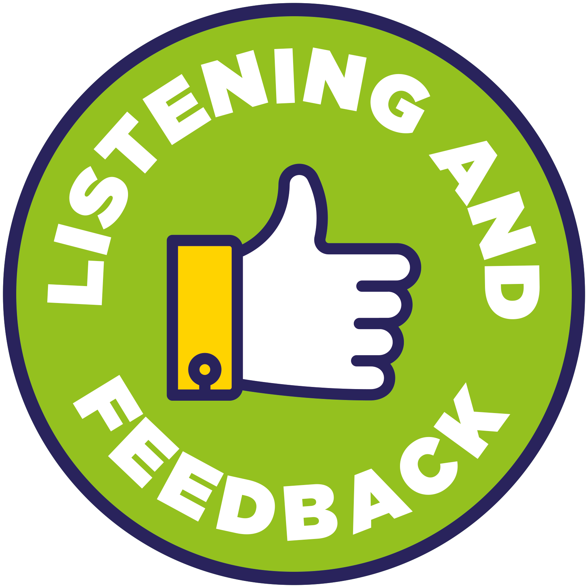
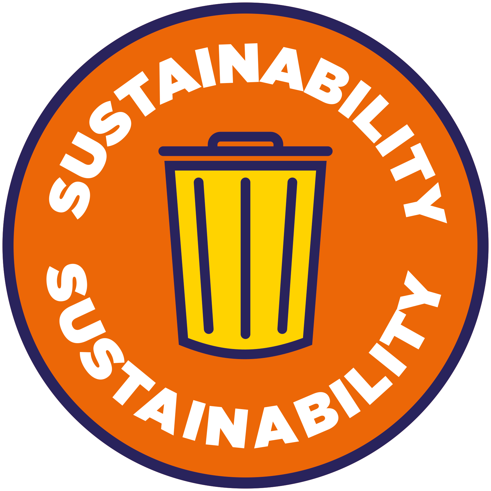

Students can expect NTU to:
|
- Treat students and colleagues equally and respectfully, in the spirit of equality and diversity and creating an inclusive university community
- Ensure a safe and secure environment in accordance with Health and Safety standards and safeguarding responsibilities
- Ensure all aspects of sustainability are considered in its teaching, operations and research as befitting one of the country’s most sustainable universities
- Safeguard all personal information provided, in compliance with the requirements of the Data Protection Act
|
|

The University aims to provide:
|
- A safe and productive learning community in which both staff and students will have the opportunity to develop their career ambitions and fulfil their potential
- An enhanced student experience through continual investment in our facilities and educational learning environment
- Excellent standards of teaching and assessment, support, advice and guidance for students and regular continuing professional development for its staff
- A dedicated employability and enterprise staff to help students find and arrange placements and work experience to enhance employability in the global graduate market place
- A range of activities that will enhance employability and personal development – including work-based projects; volunteering; enterprise opportunities and international or language programmes
- Access to sources of support to underpin your learning and wellbeing
- High-quality IT facilities, libraries and learning resources
- Effective communication to keep you informed about your course, services and university experience
|
In addition, you can expect:
|
- Course information which details, for example, key contacts, assessment criteria, contact hours and mode of delivery
- Clear deadlines for assignments and timeframes for feedback on submitted work
- To receive clear and constructive feedback to support your learning within three weeks, with the exception of final year dissertations and some project work
- Regular timetabled opportunities to meet with your tutor
- An induction to help familiarise you with your learning environment, introduce you to other students, and provide an introduction to your studies, available resources and key people
- To be provided, in advance of enrolment, with clear information on course tuition fees and any associated mandatory course costs, along with payment options and deadlines, and an indication of costs for optional items
- A variety of routes for students to provide feedback regarding academic courses and services
- Notice of changes to timetables in reasonable time through appropriate routes including: NOW, NTU email, MyNTU and text messaging
- To receive information detailing assessment arrangements and regulations, academic guidance and support, and clear information on academic appeals and complaints procedures.
|
|
 
In return you are expected to:
|
- Treat staff and your fellow students with dignity and respect and in line with the Student Code of Behaviour
- Take responsibility for managing your own learning, participate in induction and tutorials, actively engage in your course, give full attention to all timetabled and time-bound sessions and activities, including all tutorials, and actively respond to feedback received
- Ensure that you submit assignments by agreed dates and that these are your own work
- Inform the University of an absence due to health reasons or other exceptional circumstances in accordance with your School’s attendance policy
- Provide feedback through student academic representatives and modular and course evaluations, which aim for improvements in the quality of learning and teaching
- Provide feedback to the Students’ Union to help improve the overall student experience
- Commit to the terms and conditions of being an NTU student and your obligations regarding fees and payments
- Ensure a timely response to communications relating to course enrolment, progression and graduation
- Keep all your contact details up to date and disclose, to an appropriate member of staff, any changes to your personal situation that may affect your learning experience
- Respect the physical and online environment of the University, including learning, social and living accommodation and behave respectfully towards our neighbours as a responsible member of the local community
- Familiarise yourself and comply with the University’s policies and regulations, including the IS Computer Use Regulations
|
|
The Students’ Union undertakes to:
|
- Provide you with accessible, democratic decision-making opportunities with proactive academic representation, allowing the Union to be a confident voice on your behalf
- Create a range of personal development opportunities for you to enhance your employability
- Build a safe, inclusive student community and promote your academic and personal welfare through the Union’s Information and Advice Service
- Deliver high-quality services in the areas student members feel important and encourage responsible behaviour
- Be a well governed organisation keeping representation at the heart of all its activities while establishing constructive relationships with key stakeholders.
|
| |